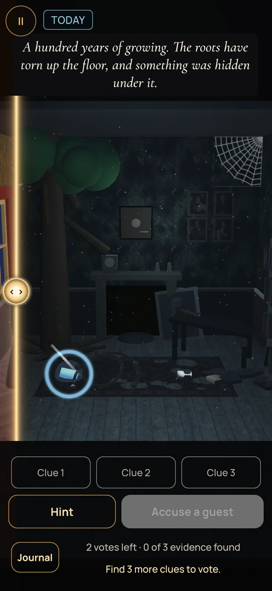
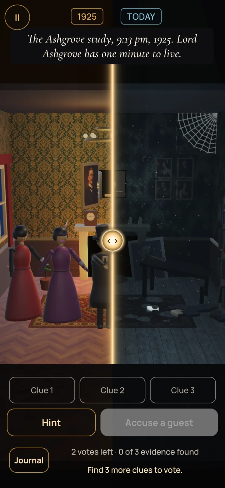
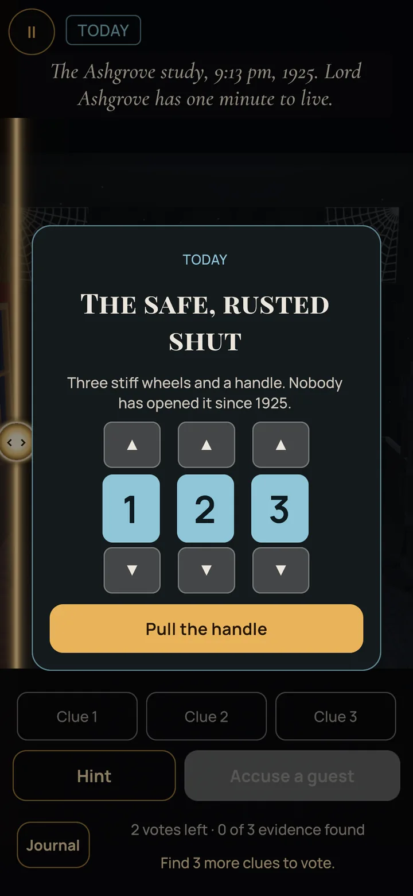
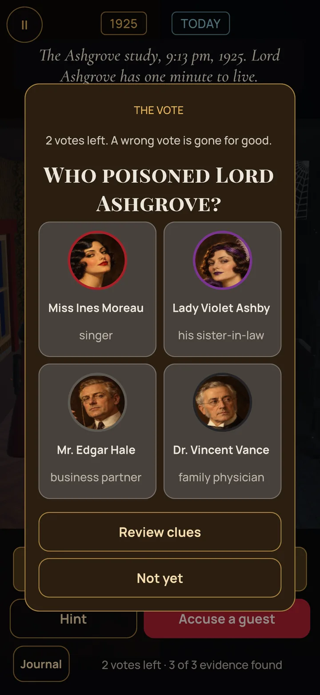
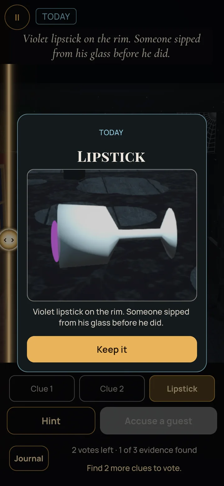
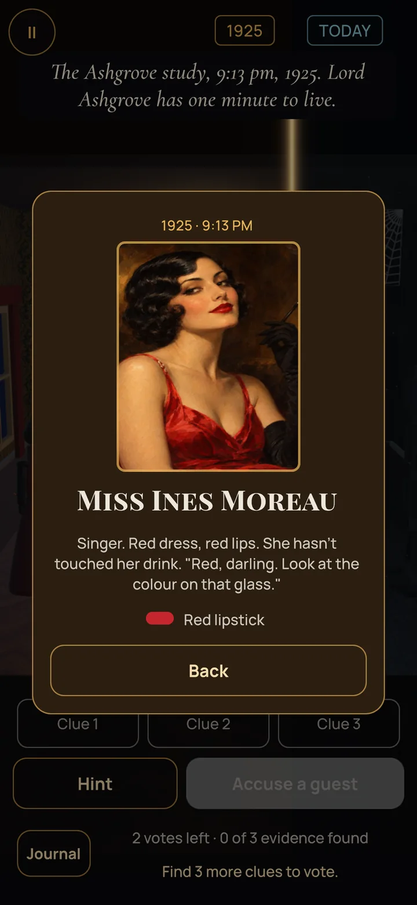
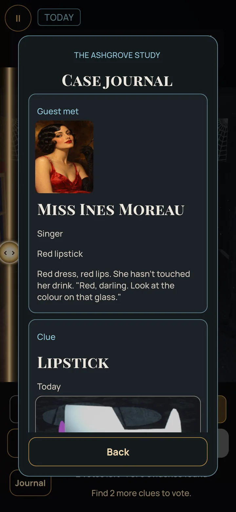
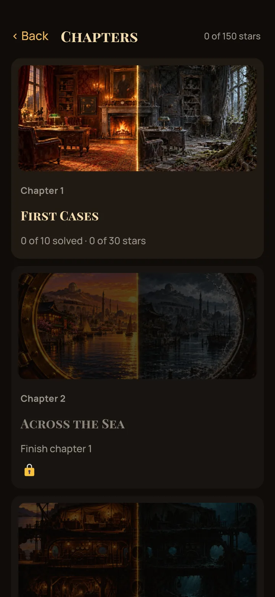

Past & presentA small change.
A small change.
A hidden clue.
Move the boundary between eras. What you change in the past may reveal evidence in the present.

A mystery across time
Two Rooms
Drag the line between past and present. Change the past, find the clue it leaves, and name the killer.

Follow the evidence
One room holds two versions of the truth. Search both eras, uncover what changed, and piece together the crime.
Move the boundary between eras. What you change in the past may reveal evidence in the present.

Turn lock wheels, rub away dust, and move objects. The next piece of evidence is waiting to be found.

Read their stories, put the clues together, then vote for the culprit. You have two votes per case.

Inside Two Rooms
A closer look at the first case, plus the chapters beyond it. Swipe, scroll, or use the arrows to explore.




Keep investigating
From a manor study to a lighthouse, a railway room and a tea house: follow the trail through fifty cases across five chapters.
Solve a case to open the next. Return to solved cases and earn all three stars by finding the right culprit first time, without hints.
Your case, your device
Your progress and settings stay on your device. Once a chapter has downloaded, its case stories can be played offline.
The Android game uses Google AdMob for ads and Google Play / Unity IAP for the optional Remove ads purchase. These services process data as described in the privacy policy.
Read the privacy policyA note to the studio
Questions about Two Rooms or something to report? We’re here to help. Get in touch with Oasis Forge.